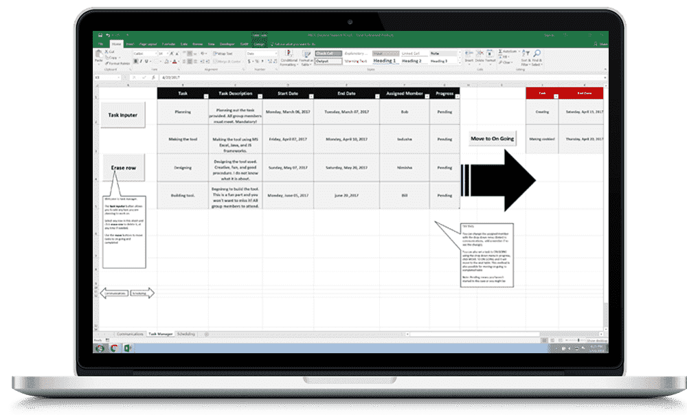

Side projects are a great way for students to expand their technical knowledge. PROG is a decision-making support tool made to help students maximize efficiency and effectiveness when completing these tasks.

Personal Website
HTML5, CSS3, & JavaScript frameworks
I have really learned to appreciate the nature of web development. The site you are currently on is a responsive website I developed from scratch for personal and professional purposes.